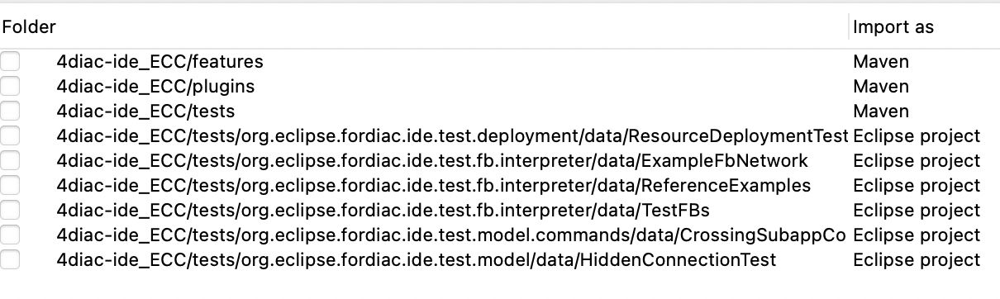
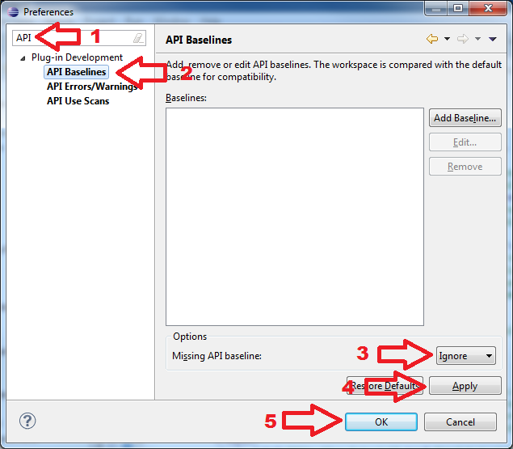
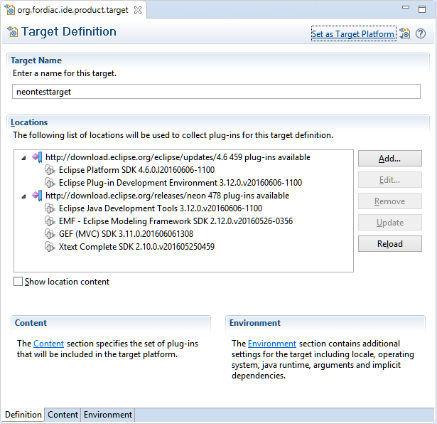
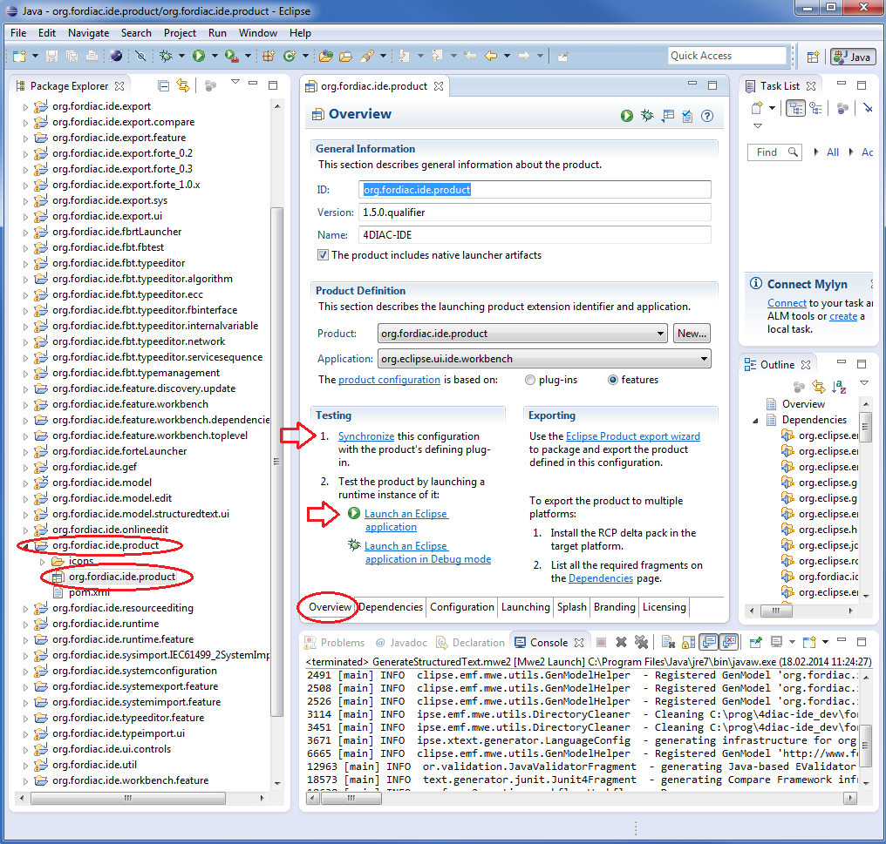

$ cd ~ $ git clone https://github.com/eclipse-4diac/4diac-ide.git
Building and Running 4diac IDE
You have 2 options for building and running 4diac IDE:
1 Building and Running 4diac IDE from Source
Run through the following steps to build and execute the 4diac IDE from source:
1.1 Get the Development Environment
The 4diac IDE requires at least a version 21 Java JRE. Higher version JREs are supported, but may require additional Eclipse IDE configuration (see step 4 of chapter Import plug-ins into workspace).
Get the latest Eclipse IDE. Use Eclipse Modeling Tools edition.
In order for all dependencies to resolve correctly, the following additional Eclipse packages are required:
-
M2E - Maven Integration for Eclipse
-
M2E - PDE Integration
-
XText Complete SDK
You can install these packages using your Eclipse IDE by selecting Help → Install New Software (Eclipse Repository).
1.2 Check out the 4diac IDE Repository
This section shows how to check out (clone) the 4diac IDE repository.
You will need Git to download it by using the clone command from Git to the repository https://github.com/eclipse-4diac/4diac-ide.git.
If you’re using the terminal, do:
The code will be copied to the new created folder
~/4diac-ide.
You can also use the git integrated into Eclipse for this process. Please refer to the Eclipse EGit documentation on how to clone a repository.
Once you have cloned the repository make sure that you switch to the develop branch.
The default branch, release, might be out of date and thus incompatible with these setup steps.
$ cd ~/4diac-ide/ $ git checkout develop
1.3 Import Plug-Ins into Workspace
-
change to the Git perspective within Eclipse
-
right click on the 4diac IDE git repository and select Import Projects… that opens a dialog. Select everything within this dialog except the following ones

-
Wait till Eclipse finished building the project (look at the progress bar at the right bottom corner of the Eclipse main window)
-
If you have a JRE > 21 installed, you need to make sure the compiler compliance level is set to JDK version 21 in order for the build to succeed. Go to Window → Preferences. Search for "Compiler" and in the "JDK Compliance" section, set "Compiler compliance level" to 21. If this step has not been completed properly the "Problems" view will be populated with "XText" errors.
-
Check problems view for errors. If you get API Baseline not set errors you need to perform the following steps:
-
Open the Eclipse preferences:
-
Enter API in the top left search field. You should get three research results: 1. API Baselines, 2. API Errors/Warnings, and 3. API Use Scans
-
You now have two options:
-
Set an API Baseline for your developments:
-
Select: API Baseline
-
Click Add Baseline …
-
Enter a name, e.g., MyEclipse
-
For the location select your Eclipse directory
-
Press Finish
-
Select your new baseline in the API Baselines window and press OK
-
-
Set the API Baseline error to ignore:
-
Select: API Baseline
-
Set the option Missing API Baseline: which can be found in the bottom of the preferences window from Error to Ignore

-
-
-
Note: If you get an error in the "Problems" view stating "There is a possible API baseline mismatch …", you can safely ignore this message. This message will not prevent the IDE from building successfully.
1.4 Set Target Platform
-
Expand the project
org.eclipse.fordiac.ide.productand open the target configurationorg.eclipse.fordiac.ide.product.target:
-
Wait until the target platform is resolved or press and wait until it is resolved
-
Press within the upper right corner and wait until the workspace is built.
1.5 Run in Development Mode
-
To use 4diac IDE directly under this (development) Eclipse you need a type library and templates. Both are part of the 4diac IDE repository and can be found in the
datadirectory. In order that your development 4diac IDE can find this they have to put into the directory where the target platform is stored. For that copy thetemplateand thetypelibrarydirectory into the.metadata/.plugins/org.eclipse.pde.core/.bundle_pooldirectory. -
Open the
org.eclipse.fordiac.ide.productfrom theorg.eclipse.fordiac.ide.productplug-in.
-
In the Section of the Overview tab press
-
Press in the Overview
Building your own 4diac IDE
A big drawback for running 4diac IDE from source is that you need at least 2 Eclipse instances running. Especially on systems with little memory this can be an issue. If you still want to keep up with the developments performed in the Git repository it makes sense to build a binary package. See Building a binary 4diac IDE package from source for details on how this can be achieved.
In addition we offer a nightly build of 4diac IDE here.
2 Building a Binary 4diac IDE Package from Source
For building a binary 4diac IDE package from the source code the best is to use the Maven configuration which is also used to build 4diac IDE on our build server. A modern Eclipse IDE comes with Maven integration out of the box. Then the necessary steps for generating binary 4diac IDE packages are:
-
Have the 4diac IDE source code in an Eclipse workspace as described in Building and Running 4diac IDE from Source
-
Go to the root project
org.eclipse.fordiac.ideand right-click on the pom.xml -
Invoke the .
-
After a successful build you will find the output in
plugins/org.eclipse.fordiac.ide.product/target/productsdirectory.
Alternatively you can run .mvn .install on the command line in the root folder of 4diac IDE source code.